UDN
Search public documentation:
TerrainEditorUserGuide
日本語訳
中国翻译
한국어
Interested in the Unreal Engine?
Visit the Unreal Technology site.
Looking for jobs and company info?
Check out the Epic games site.
Questions about support via UDN?
Contact the UDN Staff
中国翻译
한국어
Interested in the Unreal Engine?
Visit the Unreal Technology site.
Looking for jobs and company info?
Check out the Epic games site.
Questions about support via UDN?
Contact the UDN Staff
UE3 Home > Unreal Editor and Tools > Terrain Editor User Guide
UE3 Home > Terrain System > Terrain Editor User Guide
UE3 Home > Terrain System > Terrain Editor User Guide
Terrain Editor User Guide
Overview
Opening the Terrain Editor
Terrain Editor Interface
Figure 1: The TerrainEdit dialog.
| 1 | Tools?. |
| 2 | Settings?. |
| 3 | View Settings?. |
| 4 | Import\Export?. |
| 5 | Brushes?. |
| 6 | Tessellation?. |
| 7 | The Browser Window?. |
| 8 | The Bottom-Row Buttons?. |
Tools
Figure 2: The Tools Block. The following tools are available, (in left-to-right, top-to-bottom order):
Add/Remove Sectors
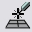This tool will add or remove sectors to existing terrains in any direction. This tool is limited to adding/remove MaxTesselationLevel patches. The cursor must move the size of the patches to add/remove. CTRL-left click will start the tool for adding sectors, while CTRL-right click will start the tool for removing sectors. Hold the button and dragging will overlay the outline of the patches that will be added/removed. Added patches will show up in a green overlay, removed will show up in red. When the button is released, the patches are added/removed and the terrain location is offset to account for the difference, if necessary.
Add/Remove Polygons
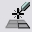This tool is currently unavailable.
Paint
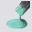When selected, the tool will 'paint' the selected layer on the terrain when CTRL -left mouse is pressed. It will 'un-paint' (remove the layer) if CTRL -right mouse is pressed. When the heightmap is selected in the layer browser, CTRL-left will raise the height of the terrain, while CTRL-right will lower the height. Painting across terrains is supported to enable proper matching of separate terrain edges.
Vertex Paint
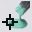When selected, the tool allows for selecting vertices directly and moving them up or down, giving the ability to easily match up terrain edges with static meshes, etc. in the editor. To select vertices, CTRL-left click. To deselect vertices, CTRL-right click. Note that the select/deselect actions are additive operations. To clear all currently selected vertices, hit CTRL-ALT-SHIFT-right click. To move selected vertices, CTRL-ALT-left click and move the mouse up or down. If the ‘SoftSelect’ option in the Settings box is checked, vertices selection/deselection will be 100% within the center circle of the tool, and vertices within the falloff radius will be selected at diminishing weights going from Min to Max radius. Vertices that are selected at 100% will display a white ball hovering over them, with the color fading to black as the weight falls to 0. If SoftSelect is not checked, the vertices that completely contain the tool circle will be selected (ie, a square around the tool circle will be selected at 100%). The Strength setting is multiplied by the selected vertex weight and the amount of mouse movement to move the vertices when editing.
Manual Edit
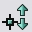This tool is currently unavailable.
Flatten
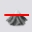This tool will flatten the terrain to the height of the terrain at the time of the CTRL-left click if the height-map is selected. If the ‘Angle’ box in the Settings section is checked, the terrain will be flattened to the angle determined at the time of the CTRL-left click. Additionally, if the ‘Angle’ box is unchecked and there is a value in the ‘Height’ box in the Settings section, the terrain will be flattened to the supplied value.
Flatten Specific
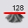This tool is currently unavailable. It’s functionality is supplied through the ‘Height’ Settings entry as described above, and it will be removed in the future.
Smooth
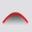This tool will smooth the terrain about the center point clicked. If the height-map is selected, it will adjust the heights. If a layer is selected, it will smooth the alpha map values.
Average
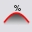This tool will set the affected points to the average of all of them. Applicable to either height or layer mappings.
Noise
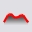This tool will inject noise into the selected layer/height-map.
Visibility
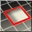This tool will paint holes in the terrain if CTRL-left is clicked; it will remove holes if CTRL-right is clicked. The tool is constrained to MaxTesselationLevel to avoid disappearing holes when detail is removed from the terrain.
Texture Pan
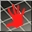This tool will pan the texture of the currently selected terrain material in the browser window when CTRL-left is clicked and the mouse is dragged. (NOTE: Currently, this change is not properly propagated to the terrain material as it requires recompiling the terrain material, which is slow. Setting the values directly in the property window of the terrain material Property window is the suggested method for altering these values for the time being.)
Texture Rotate
This tool will rotate the texture of the currently selected terrain material in the browser window when CTRL-left is clicked and the mouse is dragged. (NOTE: Currently, this change is not properly propagated to the terrain material as it requires recompiling the terrain material, which is slow. Setting the values directly in the property window of the terrain material Property window is the suggested method for altering these values for the time being.)
Texture Scale
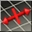This tool will scale the texture of the currently selected terrain material in the browser window when CTRL-left is clicked and the mouse is dragged. (NOTE: Currently, this change is not properly propagated to the terrain material as it requires recompiling the terrain material, which is slow. Setting the values directly in the property window of the terrain material Property window is the suggested method for altering these values for the time being.)
Lock Vertex
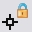This tool is currently unavailable.
Mark Unreachable
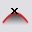This tool is currently unavailable. (NOTE: This tool was intended as a collision optimization; but we have not found a need for it to date. With the current collision implementation, it would potentially make things more complex.)
Split Terrain X
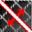This tool will split the terrain along the currently selected X axis. When enabled, a yellow line will render where the split will occur. CTRL-left clicking will cause the split to occur.
Split Terrain Y
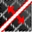This tool will split the terrain along the currently selected Y axis. When enabled, a yellow line will render where the split will occur. CTRL-left clicking will cause the split to occur.
Merge Terrain
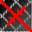This tool will merge two neighboring terrains provided they match up appropriately. When enabled, a yellow line will render where the merge will occur. If the merge is not possible, no line will appear. CTRL-left clicking will cause the merge to occur.
Orientation Flip
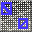This tool will flip the edge orientation of a terrain patch. CTRL-Left clicking will flip the edges to the opposite of the default orientation. CTRL-Right clicking will restore the edges to the default orientation. Note that edge flipping is only valid at the highest tessellation level.
Settings
Figure 3: The Tool Settings Block.
Per-Tool? checkbox
When checked, the settings will be applied to the currently active tool only.Scale Combo
Currently UNUSED.SoftSelect checkbox
When checked, the vertex paint/edit tool will utilize soft selection of vertices.Constrained Checkbox
When checked, if the terrain EditorTessellationLevel is set to something other than 0, editing will only affect the vertices at the set tessellation. Higher detail vertices will be automatically set to match the plane determined by their edited neighbors.Angle Checkbox
This control is only enabled when the Flatten tool is active. If checked at that time, the flatten tool will utilize the angle determined when the tool is activated..Height Text box
This control is only enabled when the Flatten tool is active. If the Angle option is unchecked and there is a value in this box, the flatten tool will use the value as the height to flatten to.Slider/Combo Pairs
There is a slider/combo pair for each of the following brush settings:- Strength
- Radius
- Falloff
Mirror Combo
This combo will allow for selecting mirroring modes for the application of certain terrain tools. When a tool supports mirroring, a second tool cursor in purple will appear in the mirrored position while editing. The mirror combo contains the following options:| Flag | Description |
|---|---|
| NONE | Do not mirror the tool. |
| X | Mirror about the X axis |
| Y | Mirror about the Y axis |
| XY | Mirror about the X and Y axes |
View Settings
Figure 4: The View Settings Block.
Terrain Combo
This combo allows for selecting the terrain to edit from all present terrain actors.Properties Button
When pressed, this will bring up the property window for the currently selected terrain.View Button
When the 'eye' is present, the terrain will be in view. When clicked, the button will change to an 'empty' icon, and the terrain will be hidden in level.Lock Button
When the 'empty' icon is present, the terrain can be edited. When clicked, the button will change to a padlock icon, and the terrain will NOT accept any editing commands.Wire Button
Not implemented at this time.Solid Button
Not implemented at this time.Recompile Materials Button
When pressed, all shaders applied to the current terrain will be recompiled.Import/Export
Figure 5: The Import/Export Block.
Import Button
Allows for the import of height maps (from 16-bit BMP files), layer alpha maps (from 16-bit BMP files), or terrain (from T3D files). To import a height map, the ‘HeightMap Only?’ option must be checked, and the height map must be selected in the terrain browser. To import an alpha map, the ‘HeightMap Only?’ and ‘Into Current?’ options must be checked, and a terrain layer must be selected in the terrain browser.Export Button
Allows for the export of height maps (to 16-bit BMP files) or terrain (to T3D files). To export a height map, the ‘HeightMap Only?’ option must be checked, and the height map must be selected in the terrain browser. To export an alpha map, the ‘HeightMap Only?’ option must be checked, and a terrain layer must be selected in the terrain browser.Height Map Only? checkbox
If checked, when the Import/Export button is pressed, the operation will take place for a height-map only. If a layer is selected in the terrain browser window and this checkbox is pressed, the alpha map will be imported/exported.Into Current? checkbox
If checked along with the ‘Height Map Only?’ checkbox, when the Import button is pressed, the heightmap will be imported into the terrain currently selected in the View Setting Terrain combo-box. NOTE: The imported height map has to match the dimensions of the terrain it is being imported into, otherwise the operation will fail.Bake DisplacementMap checkbox
Not currently implemented.Class Combo
Determines the factory used when importing/exporting a height-map.Brushes
Figure 6: The Brush Block. This block of controls allows for the selection of pre-set brush sizes. If you use the sliders to set custom values, you can right-click one of the brushes and store the values in the brush button. Holding the mouse cursor over a brush will display the stored settings in the tool tip window.
Tessellation
Figure 7: The Tessellation Control Block.
Increase Button
When pressed, this button will increase the max tessellation of the current terrain.Decrease Button
Currently unimplemented.The Browser Window
Figure 8: The Terrain Browser. This window provides a visual representation of the terrain. It functions in a similar manner to the previously implement TerrainBrowser window. A context-sensitive right-click menu provide users with the ability to perform most terrain generation tasks completely within this dialog. A new addition to the browser window is to auto-create a layer from a material selected in the Generic Browser. When selected, the editor will automatically generate a terrain material, stored in the map package, with the name TMAT_
The Bottom-Row Buttons
The following image shows the controls located along the bottom of the dialog. 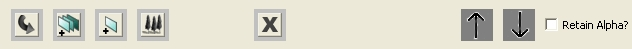Figure 9: The 'Bottom-Bar' Controls. The following controls are available, from left to right: